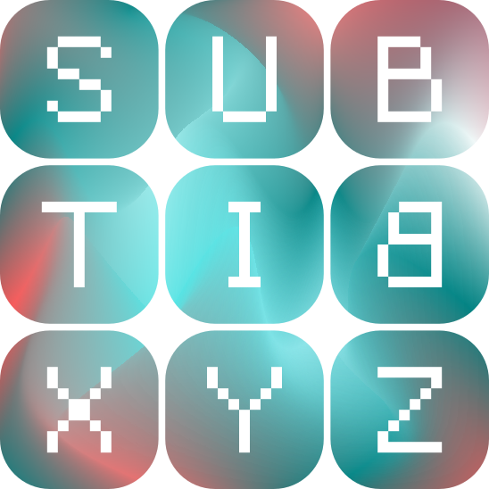

Subbit.xyz - Logo Design
Blockchain subscription layer
Brand Designer | 2024
Subbit.xyz is a trustless subscription layer designed to manage decentralised, automated recurring payments without intermediaries. The visual identity was developed to reflect its role as infrastructure while remaining practical for digital use across interfaces and platforms.

Concept
The design is based on three practical objectives aligned with Subbit’s function:
- Infrastructure Representation: the structured, geometric letterforms communicate stability, logic, and system reliability. Each letter box represents a distinct subscription package, reinforcing the idea that Subbit operates as a structured layer managing multiple recurring payment agreements. The design avoids decorative elements in favour of clarity and repeatable construction, supporting the perception of a protocol built for predictable, automated execution.
- Subscription Continuiy: the sequential nature of the letters reflects ongoing, automated payment cycles. While each character is usable on its own, their combined form represents the continuous operation of the subscription layer.
- Platform Compatibility: he rounded square containers support consistent display across product surfaces such as dashboards, app icons, interface components, and protocol visual markers.
Result
- A clear, system-oriented visual identity that reflects Subbit.xyz’s role as a trustless subscription layer. The logo supports flexible deployment across digital products while maintaining consistency, legibility, and alignment with the platform’s technical purpose.
- The final design positions Subbit as a reliable protocol identity, focused on function, continuity, and usability within decentralised payment environments.